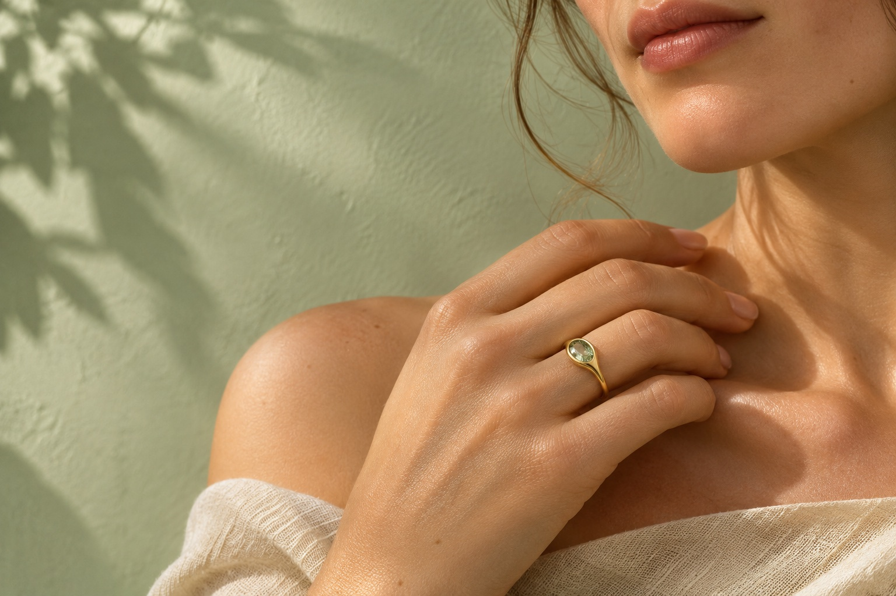

把节奏放慢
用一段轻缓的视频开场。视频加载前会显示静态图片；访客选择减少动态效果时，页面也能保留完整画面。
让光落在珠宝上，也让人愿意慢慢看。
八件作品、轻缓的视频首屏和杂志式的浏览节奏，让访客先看清每一件，再决定收藏哪一件。

珠宝需要氛围，但访客也要看得清每一件作品。这个概念先用影像建立感受，再逐步进入商品特写和完整系列。
用一段轻缓的视频开场。视频加载前会显示静态图片；访客选择减少动态效果时，页面也能保留完整画面。
从主推戒指进入编号的八件作品，交替展示细节和佩戴场景，避免所有商品挤在相同的格子里。
商品详情和心选清单让访客继续比较，不必立刻进入结账流程。
画面保持柔和克制，让金色轮廓和浅绿宝石成为真正的主角。